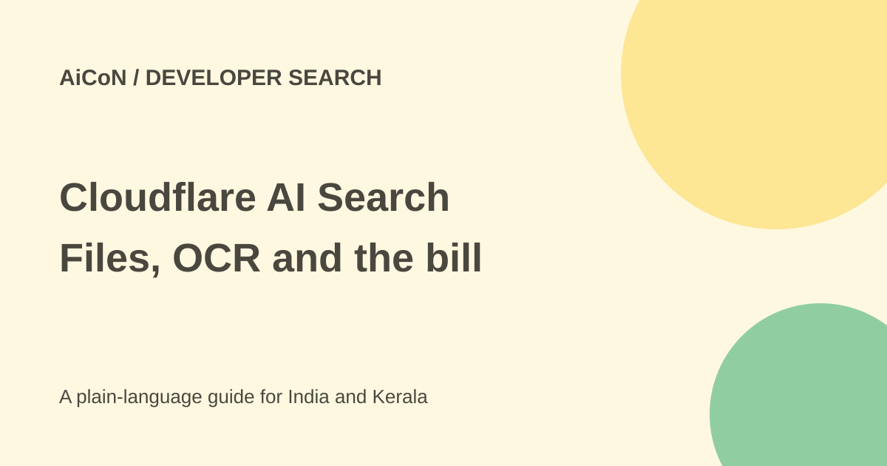

Cloudflare AI Search: OCR, image retrieval and prices
Cloudflare AI Search manages indexing and retrieval over your content. Its general-availability launch adds native image embeddings, scanned-PDF OCR and larger files. The announced billing start is 1 November 2026, with a monthly free allotment.

What does the service do?
It parses and chunks files, creates search representations and combines keyword and vector retrieval. Retrieved passages can be returned directly or passed to a generation model to write an answer. Search is not a promise that every answer is true.
Native image retrieval depends on the chosen embedding model supporting images. With a text-only model, an image query is captioned first. These are different routes with different limits; a caption may miss visual details.
OCR and file limits
The launch describes larger files. The current limit table is more specific: plain text/code and PDFs with OCR enabled can be up to 10 MiB, while PDFs without OCR and other formats remain capped at 4 MiB. OCR reads scanned PDF pages before chunking and embedding. It is available to every account but billed through image-processing ingestion tokens under the new pricing.
OCR can misread names, numbers, tables and low-quality scans. Check the extracted content before relying on it for a financial, legal or government document.
How to test your own content
- Read the official launch and current setup docs from its developer-docs link.
- Choose a small public document collection and check file format and size.
- Inspect the account's data, model and billing settings before ingestion.
- Select an embedding model suited to text or native image retrieval.
- Enable OCR only when needed for scans and review extracted samples.
- Ask known-answer, ambiguous and no-match questions.
- Check the returned source passages, not only a generated answer.
- Measure ingestion tokens, stored index size and query counts before expanding.
Announced monthly pricing
The launch says all Workers plans receive one shared pool of five million ingestion tokens, 10 GB storage, 1,000 semantic queries and 1,000 full-text queries each month. Image and text ingestion share the token pool.
Beyond the allowance, base ingestion is US$0.75 per million tokens, about ₹72.32; image processing adds US$0.50, about ₹48.22, per million tokens. Storage is US$2 per GB-month, about ₹192.86. Semantic queries cost US$0.75 per thousand, about ₹72.32; full-text queries cost US$0.10 per thousand, about ₹9.64.
These are approximate conversions at ₹96.43/USD before taxes, fees or exchange changes. The launch says select Workers AI embedding and reranking work is included, while third-party models are billed separately. Current docs say generation, query rewriting and external model providers are billed through the applicable service. Check those account charges too.
For India and Kerala
A developer could build search for public manuals or a college website. Do not upload private records without permission. Evaluate Malayalam, tables and images on your actual material before promising accuracy.
The service is developer infrastructure, not an ordinary upload-and-forget consumer assistant. No account was created or paid usage incurred in this review.
What changed since the original post?
We added the image-processing surcharge and full-text rate and clarified that the free ingestion pool is shared. Native visual search depends on model choice. The announced billing date is kept separate from current free allowances.
Frequently asked questions
Does every model search image pixels?
No. Text-only models use a caption route.
Is scanned-PDF OCR always free?
No. It counts as image-processing ingestion under the stated pricing.
Does a generated answer replace source checking?
No. Inspect the returned passages and test no-match cases.
Sources: Official GA features and pricing · Current limits and pricing · Approximate exchange-rate source. Checked 7 October 2026.